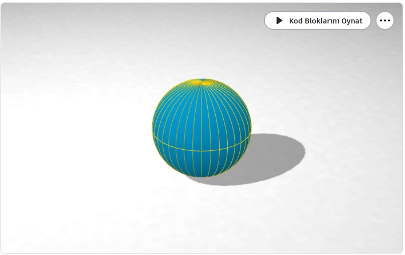

Algoritmik Dünya
Kod Blokları ile Koordinat Sistemi Tasarımı

Kodların nasıl çalıştığını görmek için resme tıklayınız.
Görevin Nedir?
Bugün bir "Dijital Haritacı" ve "Kod Yazarı" rolündesin. Görevin; Dünya’nın hayali çizgileri olan meridyen ve paralelleri, sadece elinle çizerek değil, bir algoritma yazarak 3D ortamda matematiksel bir döngü ile inşa etmektir.
Adım Adım Uygulama Rehberi
Giriş: Temeli At
Tinkercad Codeblocks sayfasını aç. Kod bloklarından bir "Küre" seç ve yarıçapını 20 birim olarak ayarla. Bu senin temel Dünya modelin olacak.
Keşfetme: Ekvator'u Çiz
Bir "Torus" (halka) ekle ve kürenin tam ortasına yerleşecek şekilde boyutlandır. Rengini belirgin (örneğin kırmızı) yap. İşte Ekvator hazır!
Açıklama: Paralelleri Döngüye Al
Halkaları tek tek eklemek yerine "Döngü" (Repeat) bloğu kullan. Her adımda Z ekseninde yukarı/aşağı doğru 5 birim kaydırarak paralelleri otomatik oluştur.
Derinleştirme: Meridyenleri Döndür
Dikey çizgiler için ince bir halka seç. Bu halkayı kürenin etrafında 10
derecelik açılarla döndüren yeni bir döngü kur.
Soru: 360 dereceyi
tamamlamak için döngü kaç kez dönmeli?
Kritik Düşünce Sorusu
Yazdığın kodda döngü sayısını artırırsan, Dünya üzerindeki koordinat hassasiyeti nasıl değişir? Tasarımı 3D yazıcıdan bastığında, kutup noktalarında çizgilerin neden birleştiğini (boğumlandığını) gözlemle.
Başarı Kriterleri
- Dünya modeli tam bir küre formunda mı?
- Ekvator ve Başlangıç Meridyeni farklı renk mi?
- Paraleller ve meridyenler algoritmik (eşit) dağılmış mı?